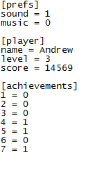

ini_read_string(section, key, default);
| Argument | Description |
|---|---|
| section | The section of the .ini to read from. |
| key | The key within the relevant section of the .ini to read from. |
| default | The string to return if a string is not found in the defined place (or the .ini file does not exist). Must be a string. |
Returns: String
You can use this function to read a string (text) from an ini
data file. Ini files are split into sections and then each
section is subsequently split into key - value pairs.
So a typical ini file would look something like this:

ini_open( 'savedata.ini' );
global.name = ini_read_string( 'save1', 'Name', 'Player1' );
ini_close();
This will open 'savedata.ini' and set global.name to the string under 'save1' > 'Name' in it, then close the .ini again. Should there be no string under 'save1' > 'Name', or there no 'savedata.ini' file present, global.name will be set to 'Player1'.